A film that does not exist, given a complete distribution history. Not one
poster — a prestige 1984 theatrical campaign, a cheaper re-cut re-release,
and a cast sheet, each worked through four passes.
The interesting artefact is not any single sheet. It is that the two campaigns
sell opposite films from the same footage, which is exactly what really happened to
a certain kind of science-fiction picture between its premiere and its second run.
01
Theatrical, Christmas 1984
Parallax Pictures
The prestige one-sheet. Airbrushed portrait floating over a night skyline, chrome-bevel title, and the tagline set in serif italic: Every memory has its price. Everything about it says a studio believed in this picture.
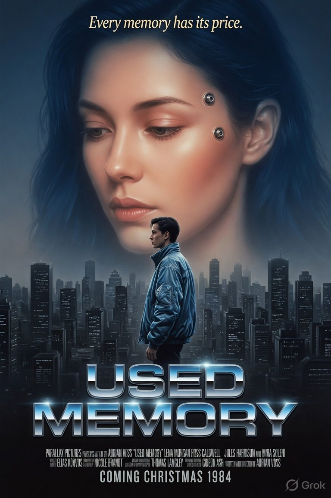
Pass 1
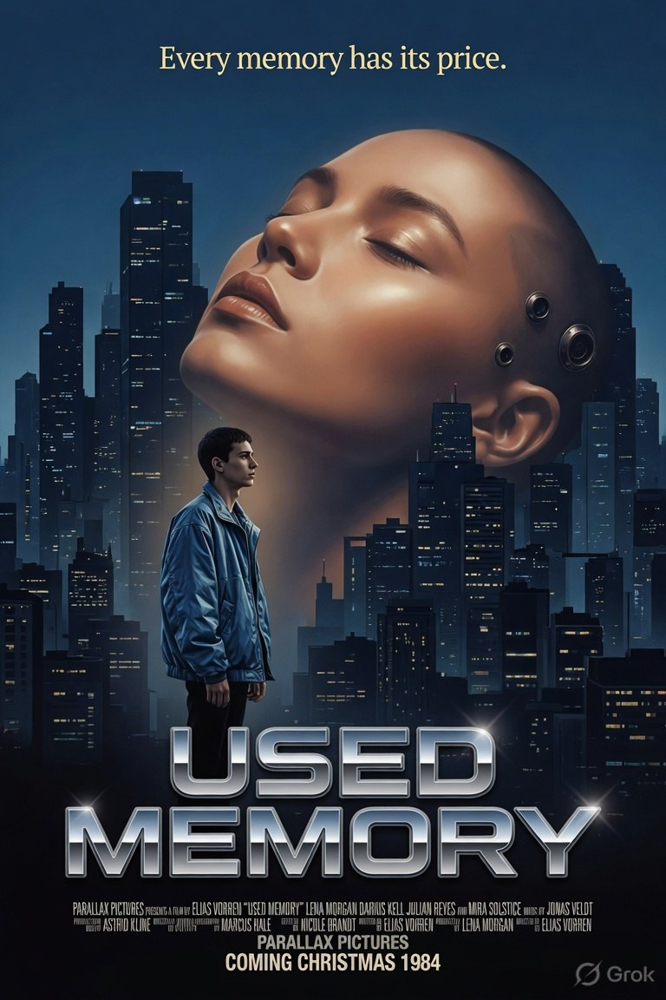
Pass 2
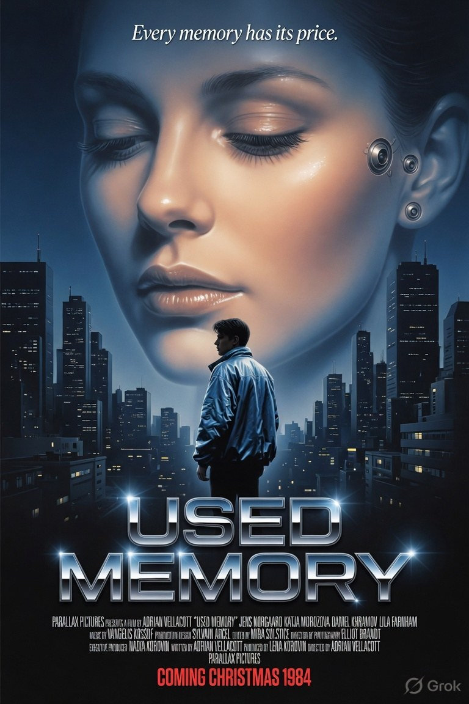
Pass 3
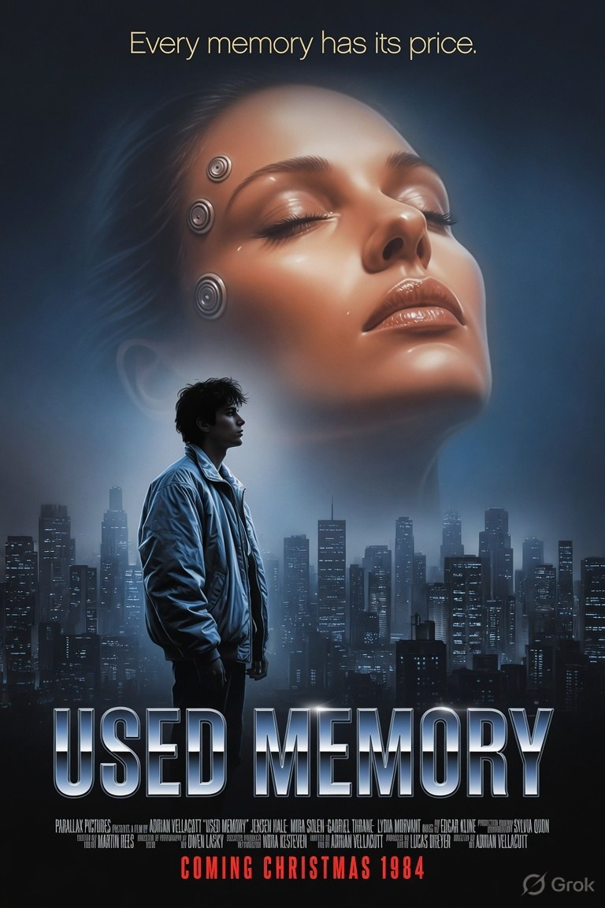
Pass 4
The four passes are a billing-block study. Each iteration tightens the credit line — cast order shifts, the music and photography credits find their place, and by the last pass the block reads like a real one: distributor, presenting credit, film-by, five names, then the below-the-line stack in decreasing point size.
The neural ports on the temple are the only science-fiction element on the sheet. Restraint of exactly the kind 1984 marketing actually used — sell the face, hint at the premise.
02
Re-edited special version
Coronet Releasing · now on a double bill
The same film after the distributor got hold of it. Cream stock, blackletter-heavy condensed sans in postbox red, halftone grain, corner wear. Faster. Meaner. 84 minutes. The way the street wanted it.
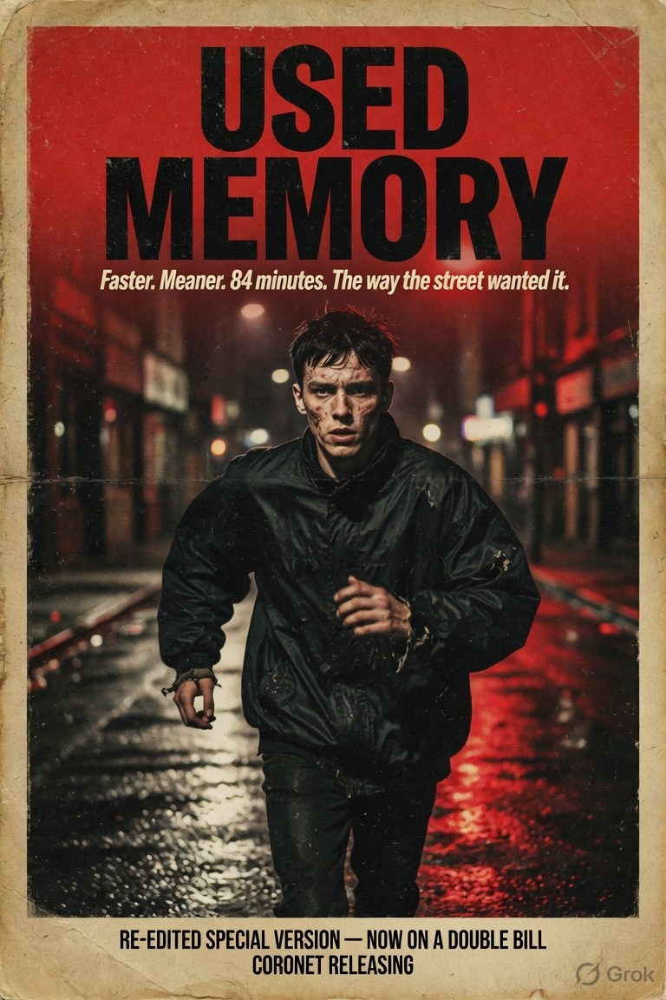
Pass 1
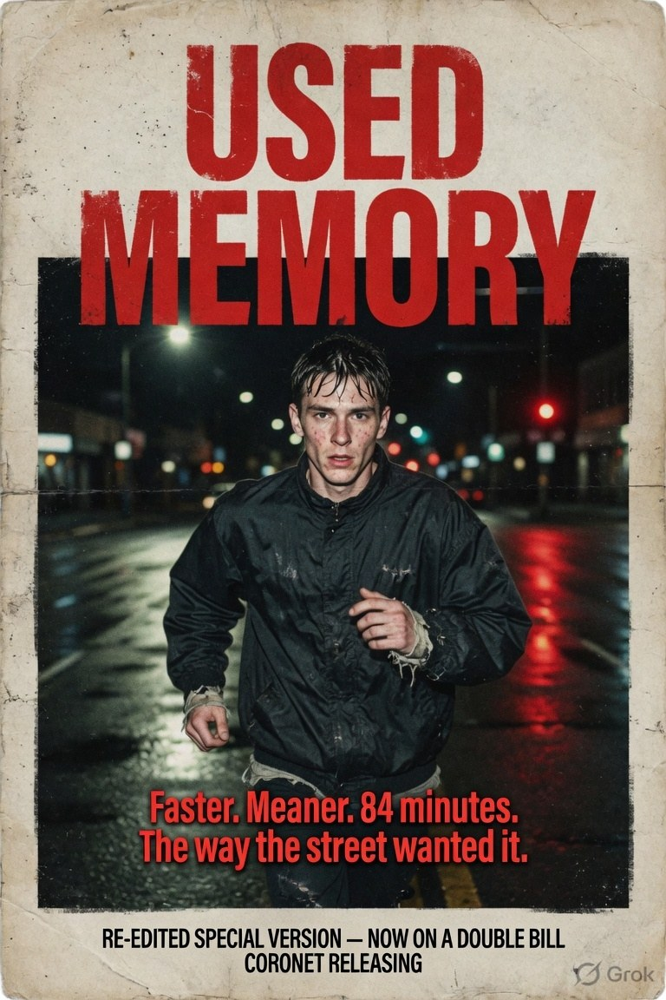
Pass 2
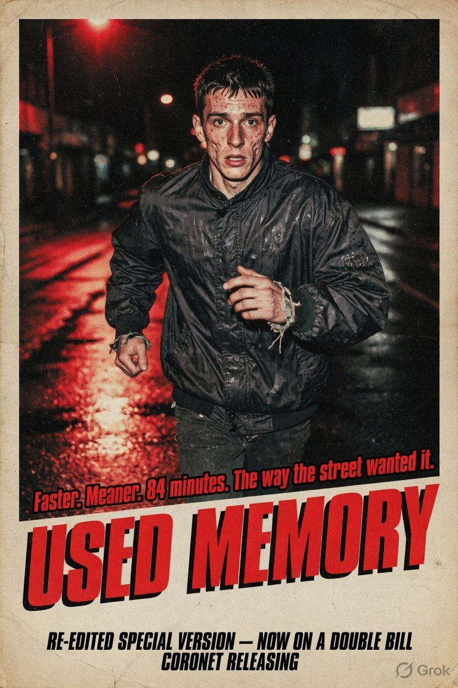
Pass 3
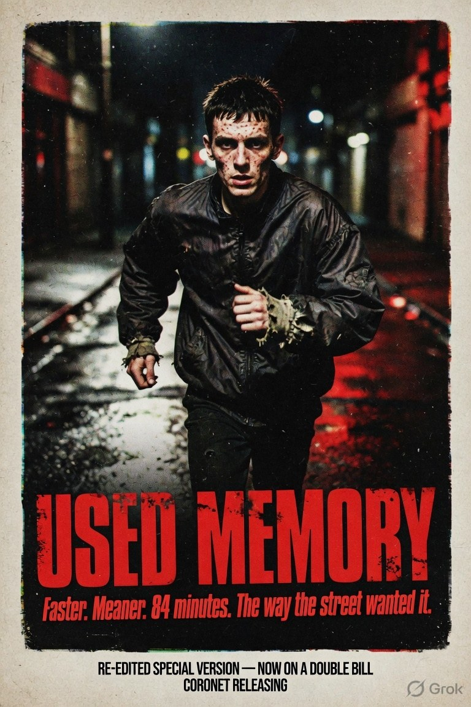
Pass 4
An 84-minute cut is the whole story in one number. Something was taken out, and the poster is bragging about it.
The dreaming woman is gone entirely. The campaign no longer sells memory as loss — it sells a man running down a wet street. Same footage, opposite promise.
The four passes move the title from top to bottom and back, testing whether the logo or the image leads. Pass 3, with the tagline wedged above the title, is the one that reads most like a real grindhouse re-issue.
03
Cast sheet
Four principals
Production stills in a 2×2 contact grid, shot like a casting book: flat grey seamless, available light, no glamour.
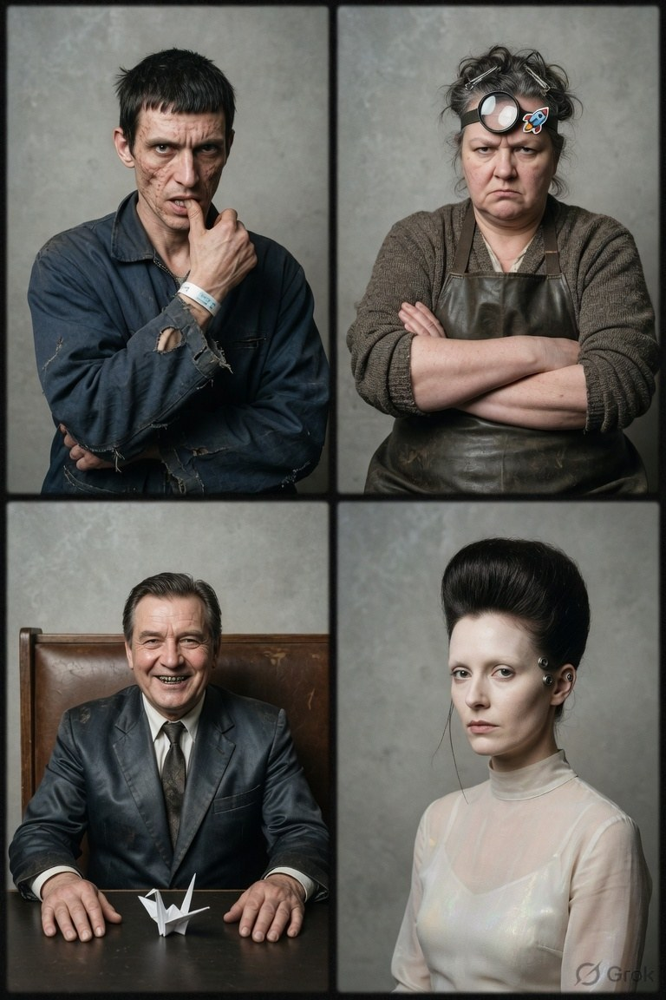
Pass 1
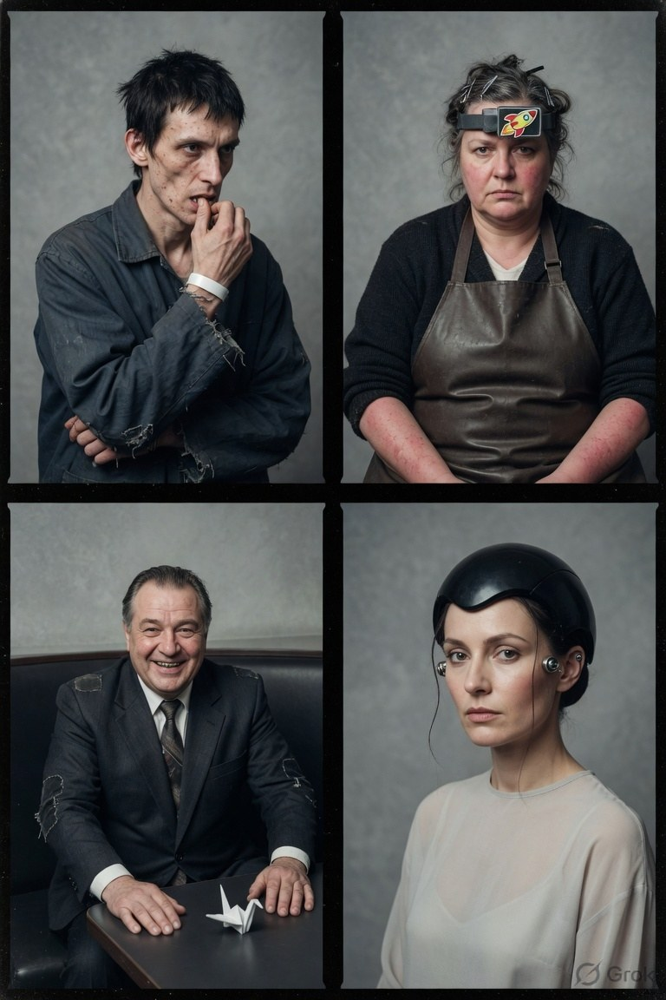
Pass 2
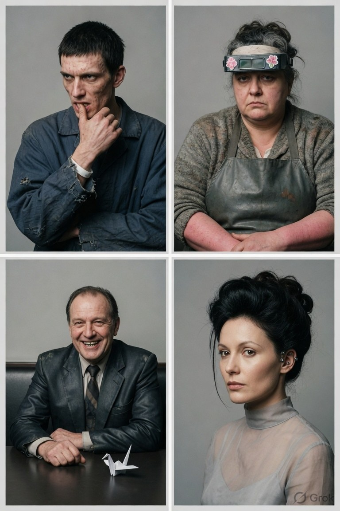
Pass 3
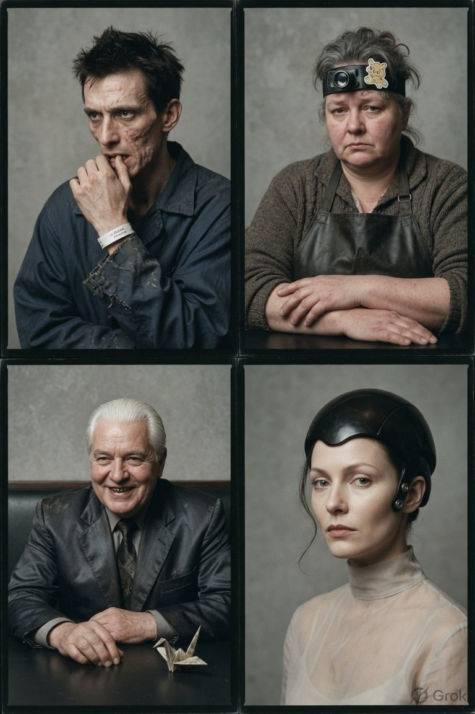
Pass 4
Four characters, and they recur with real consistency across every variant — the man in the torn work jacket with a hospital wristband; the technician in a leather apron with a magnifier band pushed up on her forehead; the broker in a worn suit, gold-toothed, grinning; the donor with electrodes at her temple.
Two props do the continuity work. The hospital wristband says the man has been processed by something. The origami crane on the broker's table is the only soft object in his frame, and it is folded from the kind of paper a receipt is printed on.
What changes between passes is the technician's headband sticker — a teddy bear, then a rocket, then flowers. A person who decorates her safety equipment. That is characterisation done with a sticker.
Why this one is different. Everything else in this collection needed a
belt label — a note on what was claimed versus what could be checked. This needs
none. It invents a studio, a distributor, a director, a cast and a running time, and every
one of those inventions is signposted by the form itself. A film poster for a film that
does not exist is not a false claim; it is the oldest honest fiction there is.
No real marks appear on any sheet. Parallax Pictures and Coronet Releasing are invented,
as are all cast and crew names. The only genuine trademark anywhere is the generator's own
watermark.